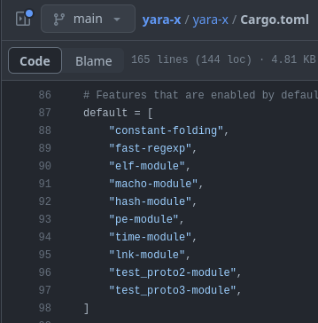

YARA and Me: Contributing to YARA's Upcoming Release
Published at Nov 30, 2023
YARA and Me
I’ve spent a fair amount of time lately developing bits and pieces of the Mach-O module for YARA-X, which is the next iteration of the YARA ecosystem that is likely nearing its first release in the near future. I began by starting to write features for YARA (the one written in C), but was advised by Victor Alvarez (the original author and continued maintainer of the YARA ecosystem) to focus on YARA-X, as YARA is nearing a change freeze of new features to focus on developing YARA-X and ensuring mirrored capabilities between YARA and YARA-X.
Additional Context
If you’re unfamiliar with YARA but still have managed to find your way to this blog post of me ranting and musing, you can find out more about this wonderful pattern matching utility here: https://virustotal.github.io/yara/.
In short, the tool is described as such:
YARA is a tool aimed at (but not limited to) helping malware researchers to identify and classify malware samples. With YARA you can create descriptions of malware families (or whatever you want to describe) based on textual or binary patterns.
Where the Mach-O module is going
There’s quite a few routes where development can continue, and I’m going to go over a few of them in this blog. A bit of conext is needed before we dive into what I’d like to work on.
First, I’m going to talk about the elephant in the room when it comes to YARA, YARA-X, and Mach-O. YARA (the one written in C) and Mach-O parsing did not have the healthiest of relationships. There were missing docs, security vulnerabilities due to improper parsing, and a bit more. If you’d like context on any of this, you can find more info and form your own opinions from these PRs and Issues:
Now that we’ve got the context out of the way, we can get into the fun stuff. In YARA (again, the C one), the Mach-O module was not enabled and compiled with the main executable. You had to configure the Makefile to compile it with the needed capabilities and without any documentation readily accessible for it. The future for Mach-O and MacOS Security prospects in YARA were not looking so hot.
This all changed with YARA-X (the one written in Rust). The memory and borrow checker system in Rust allowed for a safer port (is it a port if it is improved?) of the Mach-O module from C into Rust. With the added checking and memory safety, there comes a lot of increased confidence for the module. In fact, the Mach-O module is now included by default into YARA-X when compiled.

This is fantastic news: no messing about with a custom Makefile and no recompiling. Assuming the defaults include Mach-O come release time, users will be able to use Mach-O module straight out of the box instead of it being tucked away in the corner and hidden.
A lot of us (maybe this is too general of an assumption?) have no problem making a change in a config and recompiling for our specific use-cases. However, this prohibits a lot of people (and likely teams/orgs) from willingly using this in their environment.
The Mach-O module may still have a long way to go, but the progress from YARA-X alone is incredibly encouraging, and in my opinion, a massive step in the right direction. When it comes to the initial release for YARA-X, supporting Mach-O files and the landscape behind them is huge.
MacOS and iOS security folks probably feel pretty closely to how I feel right now:

Now that we have all of that out of the way, let’s dive into what is coming in the near future or currently in progress.
Load Commands
For the first steps forward, most (if not all) of the load commands should be parsed and available to the user for the ability to query and write rules on. A few come to mind for detection purposes, and those are the values that can be forged or modified (compile timestamps, UUIDs, etc.). Values like this can be used with other indicators to provide higher fidelity detections (ie, a certain threat actor may always compile their Mac malware with dylibs that have a compile timestamp of 2)
I plan on iterating through most development wise, with the LC_UUID and LC_MIN_VERSION* load commands being the ones I am currently working on (either in development or in review to be merged). I would prefer to work on the ones that can help derive the most value from a detection perspective first (so if you have any use-cases, reach out and let me know!).
Code Signing
The CODE_SIGNATURE segment in a Mach-O executable can really contain quite a lot. Apple requires signing of all executables to run seamlessly (otherwise the user will need to go into System Preferences and click that little annoying allow button).
There are two blobs in the code signing segment I would really like to parse out to make available to users: certificate chains and entitlements.
Certificate Chains
With all this code signing business that Apple is rolling out (since Big Sur), a lot of malware authors are going to be signing binaries via adhoc certificates or stolen/compromised certificates. This allows another opporunity to cluster or detect on specific certificate chains or values in the chains. There’s a lot of data that can be bined here for correlation or detection. After load commands, I’d like to get these moving into a parsed and detectable state.
You can read more on Mach-O certificate chains and CMS blobs here and more here.
Entitlements
Entitlements are a way for applications to ask for permission to use a service or piece of technology on the device it is running on. Entitlements are stored as key-value pairs in the code signature.
I would like to focus on these eventually to help discover and cluster on Mach-o executables that request similar (or the same) entitlements on the system. These entitlements allow developers to be granted specific permissions and can help indicate towards possible behaviors of an application before it is executed.
You can read more on Mach-O entitlements here.
Lots of Work Ahead
Now that I’ve laid some of this out, I am going to save you the time of reading anymore of my diatribe and go write some Rust 🦀.
A Bit of Fun
Advent of Code 2023 🎄 releases tonight (01 December 2023) at 12am ET. I highly encourage you to try it out if you haven’t in the past. Learn a new language; practice your coding problem skills; have fun. It’s a blast every year, and I can’t recommend it enough. I highly recommend checking out others’ solutions to problems as well; I can’t even begin to describe all I’ve learned from doing so.